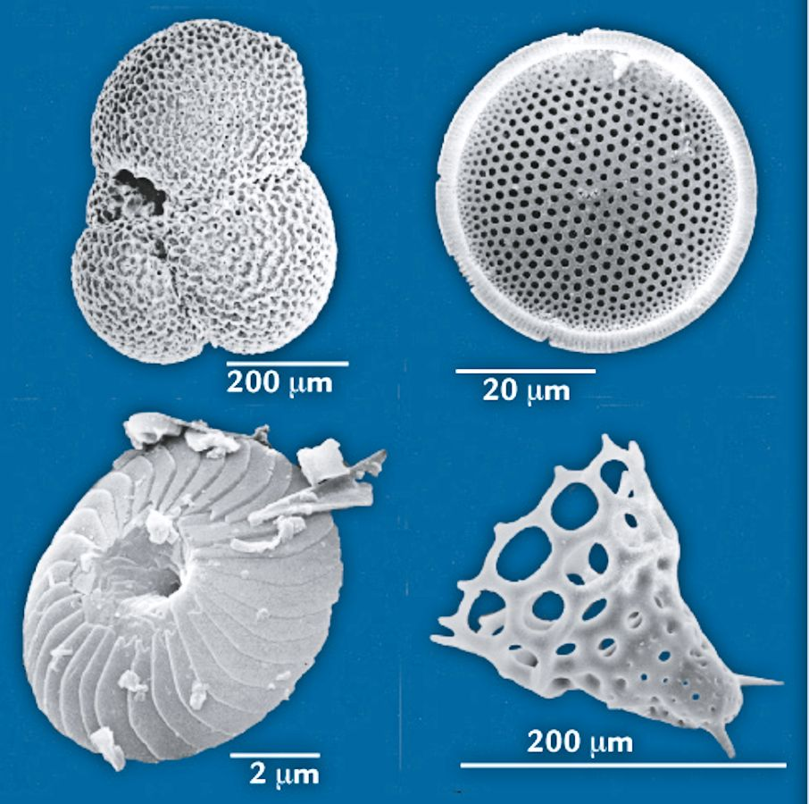

CO2 is balance of volcanic outgassing and chemical weathering
Stable Isotopes: 12C and 13C
12C: 99% of all carbon on earth
13C: About 1%. Just like 12C, but slightly heavier
Notation:
\[ \delta\ce{^{13}C} = \left( \frac{ \left( \frac{\ce{^{13}C}}{\ce{^{12}C}} \right)_{\text{specimen}} - \left( \frac{\ce{^{13}C}}{\ce{^{12}C}} \right)_{\text{reference}} }{ \left( \frac{\ce{^{13}C}}{\ce{^{12}C}} \right)_{\text{reference}} } \right) \]
Unstable Isotopes: 14C
Image credit: W. Knorr, Geophys. Res. Lett. 36, L21710 (2009) doi: 10.1029/2009GL040613
\[\delta \ce{^{18}O} = \left(\frac{ \left(\frac{\ce{^{18}O}}{\ce{^{16}O}}\right)_{\text{sample}} - \left(\frac{\ce{^{18}O}}{\ce{^{16}O}}\right)_{\text{ref}}} { \left(\frac{\ce{^{18}O}}{\ce{^{16}O}}\right)_{\text{ref}} } \right) \times 1000 \permil\]
Image Credit: R Mulvaney/British Antarctic Survey
Image credits: Pete Bucktrout/British Antarctic Survey
Image credit: National Ice Core Laboratory
Bottom \(\rightarrow\) top = oldest \(\rightarrow\) youngest
